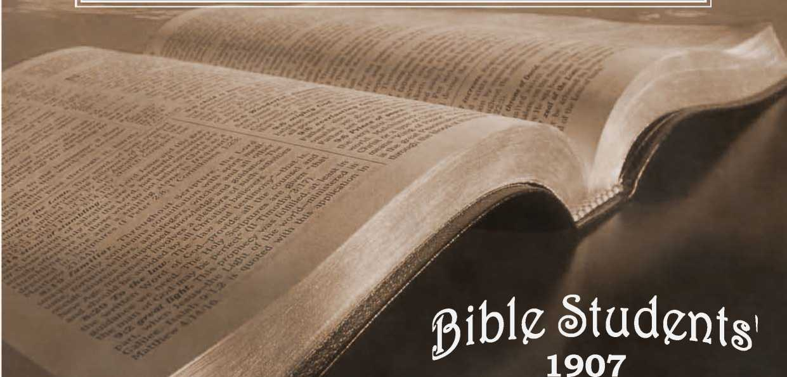

No. 76—Earthquakes in Prophecy. “Tongues of Fire.” “In the Evil Day.” Filthiness of Flesh and Spirit
NUMBER 76 Part 1
JANUARY, WM 6c a Yr.
PRIMARY STUDIES IN THE SCRIPTURES
ENTERED AT THE POST-OFFICE A-LlvE^G-HEJN Y, PA. AS SECOND-CLASS MATTER.
BRANCHES: LONDOtT, K.W., 24 EVERSHOLT ST.; MELBOURNE, EQUITABLE BLDG., COLLINS ST. ALSO ELBERFELD, STOCKHOLM, COPENHAGEN, YVERDON-SUISSE
Earthquakes in prophecy/
Their Significance at the Present Time.—The Part They Play in Nature and in Grace.—Their Association with the Reign of Sin and Death.—The Grand Results to be Expected.—The Stability of the New Order of Things in the Millennial Kingdom.—
A Dark Hour Preceding
A-L ? ......-------—_
HICAGO, Ill., Jan. 20, 19071— Pastor C. T.
Russell of Allegheny, Pa., preached twice here today to large audiences. The afternoon session at Thomas’ Orchestra Hall was crowded to overflowing to hear about the “ Overthrow of Satan’s Empire.” We report the morning topic, “ Earthquakes in Prophecy,” which was from the text, “ And there shall be great earthquakes in divers places and famines and pestilences; and fearful sights and great signs shall there be from heaven.” (Luke 21: 11.) The speaker said:
About a year and a half ago an earthquake destroyed eighteen villages in Calabria, Italy, with a loss' of thousands of human lives. A little later anvther earthquake sent -a monst$«-tidal wave over the city of Esmeralda and swallowed up four small islands off the coast of Port Limones. Next came the earthquake in the island of Formosa, Japan, destroying thousands. A short interval and San Francisco and other adjacent cities were almost demolished and other thousands of lives sacrificed. Then another destroyed Valparaiso and killed many. Since then Sweden and Great Britain report slight tremors, which scientific instruments indicate must have been of great severity somewhere. Now we have the Kingston disaster.
The New York Tribune remarks: “The last year and a half will probably go down to history as one of the most disastrous periods of earthquake activity in the records of the human race.” Our opinion is to the contrary, that much more violent and much more destructive disturbances are just ahead of us: and our opinion is based upon the testimony of the Scriptures.
' The recent prevalence of earthquakes properly enough draws our attention to the Scriptures and what they -have to say on this subject. Our text is from the Master’s own lips—a part of his description of the trouble that would come upon the world in the close of this age, preparatory to the inauguration of the Millennial age and its glorious manifestation of righteousness under the King of kings and Lord of lords. The Lord was answering a •question of His disciples respecting the end of the age and the signs which would mark it. In the preceding verses he had told them that they might expect to hear of wars and tumults, but not to be the Millennial Morning.
terrified, that such things would come to pass, but it would not be an indication that the end of the age was near. Then, coming down to the events at the close of the age, He uses the words of our text respecting earthquakes, famines and pestilences and fearful sights and signs in heaven.. And He follows this by saying that before these terrible signs, earthquakes, etc., of the end of the age, His dfeciples would suffer persecution in the synagogues and churches, etc., for His sake and for the Truth’s sake.
It is far from our thought that an earthquake is of itself a sign of the end of the age. We remember that history tells us of various earthquakes in the past, so that these alone would prove little respecting the time in which we are living. But as many in this audience are aware, and as thousands everywhere throughout the world are also aware, we have pointed out in our “ Studies of the Scriptures ” various lines of prophecy which converge upon the present time, clearly marking the period between 1875 and 1915 as the harvest time of this Gospel age, in which the elect are to be gathered into closer harmony with the Lord,—-separated from Churchianity and error, and ultimately to experience the change of resurrection and glorification to the spiritual, heavenly nature. And that shortly thereafter the new dispensation will begin, the Millennial Kingdom, in. which Christ and His glprified saints will bring order out of confusion, supplanting ignorance, superstition and error with the Truth, the knowledge of the Lord—substituting the^1 reign of righteousness unto life everlasting for the reign of sin and death, which has prevailed for 6,000 years. The hearts of thousands of the Lord’s consecrated people, in many lands and of many tongues, haye been made glad with this prospect, and been made strong with the Scriptural evidences supporting these hopes.
THE LORD’S SECRETS FOR SAINTS.
It is true that our Second Adventist and Seventh Day Adventist friends have also been calling attention to.the Scriptural predictions of great tribulations upon the world, now near at hand; but our message is still a very different one from theirs and used for a very different purpose. Their message is that the convulsions of nature that are now due are to result in a “ wreck of matter and a crash of worlds ”—in the utter destruction of our race anti the reduction of this earth to a mass of cinder. And they use their message as a club to threaten and t.o drive the wicked to seek the cover and protection of the Lord. Be it noticed ho.w different is our reference to these calamities. We hold with the Scriptures that the “ earth abideth forever,” and that cold and heat, summer and winter, will continue as long as the earth abideth. We hold again with the Scriptures that God marie not the earth in vain— He made it to be inhabited.—Eccl. 1:4; Gen. 8:22; Isa. 45: 18.
We have already pointed out that the fire of this day of the Lord will be a symbolical one, just as the fiery trials that have tried the Church throughout this age have not generally consisted even in part of literal fire. We have pointed out that the fiery troubles coming upon the world will overthrow present institutions, political, social, financial and religious and engulf the whole world in anarchy, and that this is in the Scriptures symbolically called in some places a great flood and in others a consuming fire that will devour the whole earth'. We have pointed out that the passing away of present institutions, called the heavens and the earth that now are, will be followed by the establishment of a new heavens and new earth, or the reorganization of society, political, social, etc., along the lines of divine approval intimated in our Lord’s prayer by the words, “ Thy Kingdom come, Thy will be done on earth as it is done in heaven.”
We remind you again of two of the proof-texts we have offered on this subject, namely, (1) The Apestle’s - declaration, Every man’s work shall be itried so as by fire; if any man’s work abide he shall receive a reward, but only the faith that is built upon the Rock, Christ Jesus, and the gold and silver and precious stones will abide the fire of that day, when all the wood, hay and stubble of human tradition, philosophies and sophistries will be consumed. (1 Cor. 3-: 11-18.) (2) The statement of the Lord through Zeph-aniah the Prophet addressed to His people, “ Wait ye upon me, saith the Lord, until (the day that I rise up to the prey; for my determination is to gather the nations that I may assemble the (kingdoms and pour upon them mine indignation, even all my fierce anger, for the earth shall be devoured with the fire of my jealousy.” (Zeph. 3: 8.) That this fire of God’s jealousy is not a literal fire that will consume the earth with its inhabitants to cinders is demonstrated, we hold, by the following Verse which declares, “ Then will I turn to the people st, pure language [message], that they may all call «pon the name of the Lord to serve Him with one consent.” The symbolical fire of anarchy which will overthrow and consume present institutions is thus shown to be the precursor of God’s great blessing for the world, which we pray, “Thy Kingdom come.”
'Nor are we using this prophetic evidence respecting the end of th<v age as a club to drive the wicked to shelter. On the contrary, we are convinced and point out to others the Lord’s declaration, “None of the wicked shall understand, but the wise shall understand.” (Dan. 12: 10.) We have pointed out also "our Lord’s words to the disciples at the first advent, which illustrate the general operation of His
providences, namely—To you (Israelites indeed) it is given to know the mystery of the Kingdom of God, but to them that are without (outsiders) these things are spoken in parables and dark sayings, that they may not understand. (Matt. 13:11-13.) We have pointed out again that the Scriptures everywhere declare that “ The secret of the Lord is with them that reverence Him, and He will show then®. His covenant.” (Psa. 25:14.) But to the wicked God saith, What hast thou to do to take my name into thy mouth, seeing thou hatest instruction and easiest my words behind thee. (Psa. 50:16,17.) Our use of these prophetic mysteries we hold is in harmony with the divine intention and message—that the Lord’s consecrated people might know of the time in which we are living, and that they might be more and more quickened and energized and separated from the world and its spirit and ripened as-wheat, and made meet for the inheritance of the saints in light—as wheat prepared for the garner.— Matt. 13: 30,43. , .
We will not attempt to prognosticate the character of the frightful signs which belong to the closing of this age, but they are very particularly referred to here by our Lord, and also were foretold through the Prophet Joel, “ I will show wonders in heaven above and signs in the earth beneath, blood and fire and pillars of smoke.” (Joel 2: 30; Acts 2: 19.) The Apostle Paul refers to the same thing in Hebrews. 12: 26-28. He refers to the establishment o-f the Law Covenant at Mount Sinai and the wonderful manifestations at that time which caused Moses and air the Israelites to fear and quake; and the Apostle tells us that those things were topical or figurative of the still more wonderful shapings, signs, etc.,, to be expected at the closing of this Gospel age,, when the Kingdom of God is about to be established; and the New Covenant about to go into effect between God and the world at the hands of the great Mediator Jesus and the Church, His “ Bride,” His “ body.”
The Apostle says that the Lord’s Word on the subject implies the removing of all things that caw be shaken, that only the unshakeable things will remain, and these unshakeable things the Apostle refers to as associated with God’s Kingdom of righteousness. When with the eyes of our understanding open we look about us'we see, O, so many things that are evidently not permanent, not right, unsatisfactory to God and to all who love righteousness,, and when we think of the fact that the shaking will be such as to loose and destroy all these imperfectthings of the present time we can imagine better than we can describe the awfulness of that shaking time which in the Book of Revelation is described as a mighty earthquake, of which there was not the like at any time before nor the like to be expected at any time in the future. The term earthquake is used to symbolically represent revolution—it is in this sense of the word that it is used throughout the Book of Revelation. >What we are to look for *hen will be a great revolution, the great earthquake, the great shaking of the present institutions whi'ch
'©verthrow everything that is not of the Lord’s establishment and approval.
Why, then, should we think of or speak of literal earthquakes, do you ask? Because in the divine order there seems to be a harmony between the literal and the figurative: the literal earthquakes have their part to play, too, in the great program. Not only are they to serve the Church as signs corroborating the prophecies respecting the approach of the great day of trouble which closes this age, but they are to serve also another purpose—a particular purpose. The Scriptures clearly intimate that our physical earth has not yet attained the grand perfection which the Lord designs it should have, to be fit Sor the blessed ones whose home, as the Paradise of God, it shall be throughout all eternity. Be it noticed that the Scriptures clearly point out that the “ little flock,” called during this Gospel age to be the Bride of Christ, are to experience a change of nature from human to spiritual, which will prepare them for heavenly conditions, spiritual conditions, but that for the remainder of mankind God’s provision is not the change of nature, but a restoration to the perfection of human nature and the development of the earth to that perfect condition which will make it as a whole the antitype of the Garden of Eden—the “ Paradise ” restored.—Rev. 2: 7. ■
We have already called attention to the fact that She flood of waters in Noah’s time was caused by the breaking of the last of a series of rings that once surrounded the earth after the manner of the rings ©f Saturn; and that God, foreknowing the wickedness th’at would develop amongst mankind and the power that would be exercised amongst men by the giants of that time—Gen. 6:4—had so timed the breaking of this last ring that the flood of waters would serve the purpose of overthrowing that order of things, and making ready for the next step in the divine program, the present order, which began after the flood, upon the coming of Noah and his family out of the Ark. Similarly the Scriptures teach that God has reserved for its appropriate time in the end of this age certain great physical disturbances necessary to the development of the earth and its preparation for the reign of righteousness and blessing of mankind, so that the troubles incidental to this change will come upon the world of mankind as disastrous floods, sore troubles, and co-operate in the bringing of mankind into sore straits and trials of faith and patience, which will result in anarchy and the complete shaking not only of the physical earth but also of the social earth and the (ecclesiastical or heavenly institutions, that all the unstable things may pass away, that the new order <of things may be ushered in on a permanent basis and have the divine approval, and mean ultimately the grandest blessing for our race.
From this standpoint a certain class only can read the signs of the times intelligently and with confidence, and this class the Scriptures call the Lord’s 44 little flock,” counted of the world as foolish, but counted of the Lord as,the wise who are to understand. To these the Lord Himself addresses His words, saying, “ When ye shall see .these things come, to pass—when ye see men’s hearts failing them for- . fear and for looking after the things that are coming; upon the earth—then lift up your hearts and rejoice,, knowing that your deliverance draweth nigh.” The: Lord’s consecrated people, possessed of His Spirit,, cannot in any sense of the word rejoice at the tribulation coming upon others; their rejoicing can only be in respect to the glorious things which they hope? to experience, and which they know to be near by these outward signs. And their rejoicing is not. merely on their own behalf but also on behalf of the whole world, for they have the assurance of the Scriptures that beyond this time of trouble, which? looms up as a dark cloud to cover the whole social? world, there is a silver lining, and beyond that the, glorious Sun of Righteousness, which shortly wilt, blaze forth and dispel every cloud and all the shadows of ignorance and superstition, bringing to the. world of mankind the rich blessings of divine favor secured through the precious blood of Christ, the. revelation of which has been delayed until now, waiting for the manifestation of the sons of God,, which cannot take place until they have been called hence and the faithful ones be glorified with their Lord.
From this standpoint the news of the last few — months of the earthquake in Southern California,, another in Valparaiso, yet another in the antarctic, circle and now another in Jamaica, doing great damage, causing frightful loss of life and great suffering, besides other minor shakings which effected little injury—all these things appeal to us as being in-, cidental corroborations of the prophecies that show that we are getting close to the great time of trouble. True, there may be a lull for a time, but we? have confidence that our Lord’s prophecy of our text has a meaning, and that the time for its fulfilment must be very close. We are w.ell aware that: the natural man and his scientific leaders will consider such association of the facts of our day with the words of eighteen centuries ago as very foolish.. We are aware that they will say, as the Apostle Peter declared they would, that all things continue as they were from the foundation of the world (2 Pet. 3< 4) that such changes have been going on and will continue to go on without any relationship to our Lord’s second presence and the time of trouble with which this age will end. That is their view—the re
. verse-is ours.
We remember that a New England Professor about seven years ago delivered an opinion which, was at the time commented on as in the nature of a prophecy. His opinion was that in about eight years from the time he wrote a great earthquake would shatter and break to pieces the huge cap of' ice which for centuries has covered the south pole, and fiis prediction was that in the breaking of this ice-cap and the dashing of these mountains of ice *into the ocean great tidal waves would result, and millions of tons of water would be thrown against.
the coasts of the United States, resulting in terrible -damage and loss of life and extending as far north at least as New York City, which, he declared, would be entirely obliterated- He further predicted that this breaking of the ice-cap of the south pole would so adjust and equalize the weight of the waters of the earth on our globe that tne axis of the earth’s rotation would be corrected, so that we would no longer have the unequal divisions of day and night of the present, but that the change of the axis would cause serious tidal waves, earthquakes, etc.
We know not the basis of the Professor’s calculations—for aught we know they were the barest guesses; but we do know that while nothing like his guesses are a part of the in-spired Word, that Word does teach that at about this time we are to expect wonderful contortions of nature and some radical changes in the earth’s conditions, that the latter may be the better adapted to the wants of man during the Millennial age and throughout eternity. It is God’s own declaration that He will make glorious the place of His feet—the earth, His footstool. (Isa. 60: 13.) And evidently great and wonderful changes shall be effected, some of these no doubt gradually; as, for instance, we know the gradual change of the temperate zone, its extension further and further toward the north pole. We notice also the increasing moderation nearer to the equator. iTlipse who recognize the power of God can have full confidence that He is able to perform all the glorious promises of His Word respecting the Paradisaical conditions of this earth for the use of man-jkilld in the Millennium and subsequently.
As already intimated, social upheavals are pictured in the Word of God, under the symbolism of earthquakes, the mountains being carried into the sea, etc., and similarly uprisings of the social element's in anarchy are pictured as tidal waves engulfing the mountains, the governments. This is one of the forceful pictures used, not only in the Psalms, but also in Revelation, and in our Lord’s symbolical language referring to the great time of trouble which is near at hand, of which the Prophet has declared that it will be a time of trouble such as was not since there was a nation, and of which the Lord declares additionally, No, nor ever shall be the like again.—Dan. 12: 1; Matt. 24:21.
Let it not be understood that we are advocating anarchy or revolution of any kind. On the qontrar-y, we are heeding the Master’s voice that all who are His true followers should seek peace and pursue it, and so far as possible live peaceably with all men,; that, like Himself, they should not resist evil with evil, force with force, but should rather commit their way unto the Lord and seek to walk in His paths and rely upon Him for the results that would be to their profit and the Lord’s glory. So far from counselling anarchy, we hold and teach that even the meanest and poorest of all the kinds of government known to the world is superior to anarchy, and we counsel in all sympathy and kindness those who are tending toward Socialism, and their number is ever increasing, that they are unsuspectingly hatching cocatrice eggs—that Socialism under present conditions is absolutely impossible, that the rich would not give up their advantage without a struggle to the death, and that this, as soon as Socialism shall' have gained the power that it is seeking and •that it will gain, will spell anarchy for the world, because those now starting in with Socialistic hopes, finding those hopes vain, will be so angered, so dis. appointed, that they will be soured, embittered, and mad with the deceptions of their theories and the impossibility of carrying them out as they intended • along the lines of benevolence, that they will be drawn to the desperate methods of the anarchists.
Would that all could see with us what the Scrip-.tures so clearly indicate, namely, the divine foreknowledge of past and present and future conditions, and the divine arrangement of them all for the highest welfare of all those who seek righteousness and hearken to the voice of Him that speaketh from heaven. Such the Lord urges to take His yoke upon them and learn of Him; that they accept of trials and difficulties incidental to loyalty to Him at the present time, and that by these attestations thqy shall be counted worthy of a share in the highest and best of all the gifts of God—to be sharers with Jesus in His throne, in His nature and in the power which He will exercise shortly in the blessing of all mankind with “restitution.”—Acts. 3: 19-21.
We urge, then, that all who are the Lord’s seek more and more to understand His wonderful plan, and to glorify Him with their bodies and spirits which are His, and to wait for His time and His manner of bringing in the blessings of the world which we all see are so much needed by the poor groaning creation. Moantime, additionally, it is for all such to cultivate the graces of the Lord’s Spirit, or, as the Apostle says, to 41 put on Christ,” His Character, His disposition, His meekness, gentleness, patience, long suffering, brotherly kindness, Hove, against which things there “is no law, and respecting which, the Apostle assures us, “ If ye do these things ye shall never fall, for so an entrance shall be ministered unto you abundantly into the everlasting kingdom of our Lord and Savior Jesus Christ.” (2 Pet. 1:10,11.) These cannot be shaken out of the Lord’s hand by any tumults. Indeed, if they be in the disasters of. the literal earthquakes, they will have corresponding grace sufficient for every time of need, and will be able to rejoice even in tribulation. Should they be in contact with some of the revolutionary earthquakes, still in patience they will possess their souls and be able to rejoice in their relationship to the Lord and their realization in spirit of His care and their knowledge that all things are working together for good to them that love the Lord—to the called ones according to His purpose. —Rom. 8: 28.
It is of this class that the Prophet declares, We will not fear though the mountains be removed arid carried into the midst of the sea [literally, We will not fear though revolution should carry all the governments of the world into anarchy]. We will not fear though the sea roar and be troubled [though the multitude of mankind cry out, threaten and give evidence of great commotion in Socialism, etc.]. We will not fear though the mountains shake with the swellings of the sea [though the kingdoms tremble with the tempests of anarchy]. There is a river the streams whereof make glad the city of God. God is in the midst of her [the little flock, the Church, whose names are written in heaven], she shall not be moved; [earthquakes cannot dissolve the relationship subsisting between the Lord and His faithful, the peace of God which passeth all understanding rules inUhelr hearts, preserving them in pea.ce] God shall help her and. that right ea.rly—“[in the morning of the Millennium—by the First Resurrection]. (Psalm 46.)
' ' 6c fi yp*
PRIMARY STUDIES IN THE SCRIPTURES ’
ENTERED AT THE POST-OFFICE •A.LLECGrl-IEOT'l Y, PA. AS SECOND-CLASS MATTER.
BRANCHES: LONDON, N.W., 24 EVERSHOLT ST.; MELBOURNE, EQUITABLE BLDG., COLLINS ST. ALSO ELBERFELD, STOCKHOLM, COPENHAGEN, YVERDON-SUISSE
of iFire/*
The GflRTPS AND THE FRUITS OE TIIEC HOLY SPIRIT.
A Spurious Text.— Faith Healing, Miracles, Unknown Tongues.— The Purposes They
Served.— Strong Delusions, Counterfeits Foretold. .
ROM all parts of the world, but especially from the Pacific coast, come reports of what its
friends call a fresh Pentecostal blessing—an outpouring of the holy Spirit, etc., and what its opponents call a religious insanity. The movement is amongst < so-called “ holiness people ” of various sects and as parties—“ missions,” as their meetings are generally Xj styled. People who have been seeking and claiming ■XI “divine healing” seem to be among the most sus-M ceptible. Amongst these are some who give evidence of deep sincerity and a superficial knowledge vl| of God’s Word. Though generally swift to speak 21 and slow to hear, they, through indolence or fear, k 1 neglect systematic study of the divine message.
’ They'“seem to come under the head mentioned by the Prophet, “ My people perish for lack of knowl-$ edge.”—Hosea 4: 6.
Reports of the movement in various directions W seemed so absurd that we declined to believe them, P supposing that since they were sent out by the $ secular press the facts must Purely be misrepresented. Now, however, the “flame,” as it is called, T/has reached Pittsburgh, where at one of the Chris-Z^ tian Alliance Missions we have an ocular demonstra-t'ion of this delusion.
[ 7 What we see here corresponds well with the g''” eral reports from elsewhere. The meetings are “be< J lam: ” everything is confusion, prayers to God z A yelled or groaned or barked,—yelped. Now and T then some one “gets the blessing” and falls in a Jy trance-like condition on the floor, to remain rigid, Nb perhaps, for hours. Another begins to talk some sort of gibberish interspersed with English. Ans | other in a different guttural mumbles and then gives | an interpretation in English. These are said to have the “unknown tongues” of Pentecost; but we remember that foreigners present did recognize those t.pngues as bona fide and got a gospel message from them.—^Acts 2: 8. -
The people in attendance pay little heed to what is uttered by these “ tongues ” and their interpretations. Some are simply curious and attend as a free show; others are too engrossed with their desire to have a trance or an “ unknown tongue ” to do anything else than groan their prayers to God for those “ gifts,” as evidences of His favor. Frenzied hugging and kissing and rolling on the floor (reported from elsewhere) are amongst the evidences that these poor people are surely under some spirit influence. And it certainly does not appear to be “ the spirit of a sound mind.”—2 Tim. 1: 7.
EVIL WORDS FROM EVIL SOURCE.
It is quite true that there was confusion at Pentecost, caused by so many speaking at once in foreign languages; but nothing in the recofd implies insanity or fanaticism: nor could we expect either from such j&oimd logicians as their writings show the apostles to have been. On the contrary, our experiences corroborate the declaration of St. Paul, that the operation of the holy Spirit of God in our hearts and minds has been favorable to the development of greater soundness of mind, by reason of our heed to the Word and its wisdom, which cometh from, above. A Watch Tower reader in Los Angele^, Cal., writes that a neighbor woman got this so-called gift of tongues, and that a reputable Chinaman hearing her, said that he understood her quite well—that she spoke his dialect of Chinese. Pressed for an interpretation he declined, saying that the utterance was the vilest of the vile.
In our judgment, the facts justify the conclusion that these “ flames ” are of an unholy spirit, of Satan: that he is now producing a poor counterfeit for the deception of a class whom he cannot reach through Spiritism, Christian Science, Hypnotic New Thought nor Higher Critic Evolution theories.
Is it asked, Why would the Lord permit 'Satan to delude honest souls? We reply, that he has permitted “ doctrines of devils ” these many centuries amongst the heathen (1 Tim. 4: 1), some of whom doubtless are also sincere. The time for the binding of Satan is not yet—though we believe it is near. (Rev. 20:2.) Doubtless Satan realizes better 'han we can how the binding or restraining is com->ag, and is actively manoeuvring to avoid it; while God, on the other hand, is willing to permit his activity because it can now serve a purpose—a sifting work—which must reach and touch every class and condition of professed Christians everywhere;—to test and prove them. Thus we consider this one'of the many delusions of our day. Mark the Apostle’s forceful words respecting this day of trial with which this age ends- and the next is ushered in. •'He says: For th'is cause “God shall send them strong delusion that they should believe a lie.” Why? “That they [who fall] all might be [thus] condemned”—be manifested ■ as not right, as out of harmony with God—as unfit to be of the “Bride5" class. But why so? “ Because they received not the truth in the love of it,” but “ had pleasure in untruth.”—2 Thess. 2: 10, 12.
In other words, the “ Present Tritth ” has beett sent hither and thither throughout the bounds of Christendom that, like as a magnet jvould attract all the particles of steel within the radius of11 its' influence, the Truth might attract all the Israelites indeed, for further schooling and ripening, preparatory to their “change” to Kingdom glory. Meantime, the Lord allows Satan to orgapiz.e various human agencies, those not of His “ very elect,” that such may fall farther and farther from the Truth, until finally none will “ stand ” except the’elect, and they “ ©n the sea of glass mingled with*1 fire.” (Rgv. 15:2.) All others are to fall more or-fess, though some will subsequently be rescued, from the catastrophe—“ saved so as by fire.”—1 Cor. 3: 15.
2 “ TONGUES
We here quote from Pastor Russell’s discourse of February 3, 1907, as it was published in the Pittsburgh Dispatch and other journals, from the text: “These signs shall follow them that believe: in my name shall they east out devils; they shall speak with new fotfgues; they shall take up serpents; and if they drink: any deadly thing it shall not hurt them; they shall lay hands on the sick and they shall recover.”— Mark 16: 17,18. The speaker said:
I [have chosen this especial text for two reasons: (1) gecause it is the one most frequently quoted by those who advocate the thought that all Christians should bp known by the peculiar gifts it specifies, and able to speak with unknown tongues, to cast out devils, to heal the sick, etc. (2) Because I wish the more pointedly to call to your attention the fact that these words are not a part of the original Gospel by St. Mark. It is well known to all critical students that St. Mark’s Gospel closed with the sixteenth chapter and eighth verse. From the ninth verse to the conclusion, as shown in our common version, was an addition to the original manuscript. This is demonstrated by the fact that these verses are not found in the original MSS. of the New Testament. The oldest Greek MSS. and the most authentic every way, are known as the Vatican MS. 1209, and the Sinaitic MS.—both written somewhere near the year 350. Neither of these contains verses nine to twenty, including our text. The earliest Greek MS. containing these verses is the Alexandrian, the date of which is credited to the fifth century. It seems rather remarkable to us, therefore, that there should be amongst scholars any who would use the words of our text as though they were of divine inspiration or apostolic authority.
However; the conclusions based upon these words deserve our consideration everyway, because of the fact that the Scriptures clearly show that our Lord and the apostles and some members of the early Church did possess many of these gifts of the holy Spirit, and did exercise them somewhat after the manner described in these interpolated words we have taken as our text. We, therefore, invite your attention to what we believe to be the Bible teaching on the subject of the “gifts of the holy Spirit” and the “ fruits of the Spirit.”
' That our Lord ever spoke in unknown tongues is not stated; but that He did cast out demons and heal thfejsick and awaken the dead is recorded, and als.® the fact that He sent forth His disciples clothed with power and authority to do the same things is also declared. .We are to notice, however, that although Jesus did many wonderful works, they are expressly stated to have been for signs—“ These things did Jesus,'and manifested forth [beforehand] His glory” —the glorious work of His Kingdom, which is to (Completely liberate mankind from the thraldom of sin, sickness, demons and death, in proportion as the laws of the Kingdom shall be obeyed. We are not, ihen, to understand that it was the divine will in dur Lord’s day nor since that all sickness should be Cured by divine power, that ?11 demons were to be Cast out, etc., But rather that just a sufficiency of this kind of work was to be accomplished to give evidence of the change of dispensation—to testify to Jesus and His disciples—to authenticate their ministry and teachings as divine.
Nor were these healings merely performed upon jt’hose who were converts to the Lord—upon those
of Fire:'
who had accepted Him as the Messiah, had> believed in Him and had become His disciples. On the contrary, the miracles recorded came not to those who were the Lord’s disciples, but to-those who were pronounced sinners. As an illustration, take the- ease of the impotent man at the Pool of Bethesda; Its five porches were continually crowded with the sick, as we read,—” In these lay a great multitude of impotent folk, the blind, the halt, the withered'.”' Yet, to only one of these did the Lord address Himself, saying, “ Rise, take up thy bed and walk, and immediately he was made whole, and took up his bed: and walked.” And that this man was not a believer in Jesus is evidenced also by the narrative, for we read —“ He that was healed wist not who it was that had healed him.” That he was not a saint is also testified by the narrative, for we read that Jesus later said to him—“ Behold, thou art made whole: sin no more lest a worse thing come upon thee.” (John 5: 3,13,14.) Other evidences in the same line might be given, but are unnecessary.
After our Lord’s death, resurrection and ascension came the Pentecostal blessing, the baptism of the holy Spirit. As an evidence or witness to this baptism, but not a part of it, were gifts similar to those which Jesus had exercised, and these were ■ generally distributed amongst all believers at that time, as we read that a measure of the Spirit was granted to every man in the Church to profit withal —for his profit and for the general advantage of the cause with which all were identified—the establishment of the Church. The Apostle Paul, in writing to the Corinthians (1 Cor. 12: 4-31), clearly indicates that the holy Spirit® operated in the early Church. Some had the gift of tongues, others a gift of healing, others a gift of interpreting tongues, etc., while some had several tongues or languages at their command, and some, notably the apostles, apparently enjoyed all of these gifts. The Apostle exhorted the Church in general to not only covet and desire these gifts, but to recognize a distinction between them—■ that some were preferable to others. The Apostle says, “Are all apostles? Are all prophets? Are all teachers? Are all workers of miracles? Have all the gifts of healing? Do all speak with tongues? Do all interpret? ” “ Covet earnestly the best gifts?’ The Apostle suggests further that one who had the gift of tongues should pray that he might also receive the gift of interpretation of tongues.—1 Cor. 12: 29-31; 13: 13.
THE USE AND VALUE OF THOSE “GIFTS.”
The Apostle distinctly foretells the discontinuance of these “ gifts,” saying, “ Whether there be prophecies, they shall fail; whether there be tongues, they shall cease; whether there be knowledge, it shall vanish away.” (1 Cor. 13:8.) He clearly intimates the reason for the discontinuance to be that the Church would gradually come into a more developed condition, in which these gifts would no longer be necessary, but give place to a higher, nobler and more certain manifestation of the indwelling of the holy Spirit. He says, “We know in part and we prophesy in part, but when [as] that which is perfect is come, that which is in part shall be done away.” He illustrates this by saying, “ When I was a child I spake as a child and understood as a child, but when I became a man, I put away childish things.” (1 Cor. 13: 9-11.) We have not yet reached the standard of perfection and full membership in Christ, and shall not reach it until our change in the First Resurrection; but as members of the Lord’s body, His Church, His Ecclesia, we properly have
made progress from the infantile condition at the 'beginning of this age. This is in harmony with the Apostle’s injunction that milk is for babes and strong meat for those more developed, and that it is our duty, as the Lord’s followers in the School of Christ, to grow in grace and knowledge and love.
These “ gifts ” in the Church had prevailed for several years at the time the Apostle addressed the saints at Corinth, whom he exhorted that they should desire the best gifts. He found them, like children, interested chiefly in speaking with unknown tongues, and gently reproved them for considering these a high attainment and evidence of great favor with God* Not that he discouraged the speaking with tongues, for, as he explained, he could thankfully say that he could speak with more tongues than they all; but he did wish them to realize that, they might have these gifts and yet come very- far short of -being acceptable to the Lord. He would have them understand that, the “ fruits ” of the Spirit were a higher manifestation and better testimony than the “ gifts.” The “ gifts ” were miracles, tongues, interpretations, etc.; the “fruits” were faith, hope, joy, love. When exhorting them to desire the best “ gifts ” he added the suggestion respecting the “ fruits ” of the Spirit as still better, saying, “Yet show I unto you a more excellent way ”—an evidence of divine favor far beyond that ■of the “ gifts.”
To demonstrate the better value of the fruit of the Spirit, love in the heart and in the life (with its concomitants of joy, peace, kindness, etc.), he gave an illustration, saying, Though I could speak with the tongues of men and with the angelic tongues also, if I were devoid of love, it would indicate that I had become like sounding brass or a tinkling cymbal; As a brass horn will make a noise when it is blown, yet have no appreciation of itself, so some possessing <the miracles, gift of tongues, etc., might exercise these in a perfunctory manner and be lacking of the real Spirit of the Lord and His Truth. The power to work miracles might be there and operate through them, and yet they might have no more relationship to it than the cymbals have to the power which strikes them. Taking the still higher gifts of prophecy and understanding of mysteries and knowledge, and even rising in the scale of attainment to the position of mountain-moving faith, all these, as the Apostle declares, would amount to nothing unless the fruit of the Spirit were developed, namely, Love. These various gifts might serve a purpose, but without Love the purpose would only be for others, and not a blessing to the individual himself.
Progressing still further in his comparison, the Apostle shows that even generosity is not sufficient, for though he were generous and self-sacrificing to the extent of giving all his goods to feed the poor and yielding up his body to be burned in his faithfulness to the Lord, yet should he not develop the great fruit of the Spirit, Love, he could have neither part nor lot with the Lord in His Kingdom, and all these other gifts would profit him nothing as respects membership in the heavenly Kingdom, as a member of the body of Christ. Therefore, he concludes that “ Love is the principal thing”—far beyond all gifts, however honorable and useful they may be. Progressing in his argument, he shows that while the gifts would depart, this grace, this fruit of the Spirit, would continue—continue down to the end of the age—yea, and go far beyond into the^ eternal future. Referring to the “fruits” .of the* Spirit, which he desrred them to cultivate and to esteem as preferable to the “gifts,” he says—Now these abideth, faith, hope, love, but the greatest of these [the most important of all] is love, for love never faileth. It will not only be the essential quality without which we cannot gain an entrance to the life eternal and the heavenly state, but it will continue throughout all eternity to be the quality or characteristic of all that shall enjoy divine favor forever.
A little reflection will make clear to us the value, yea, almost the necessity of the gifts to the Church in its infantile stage. The Apostle explains the character of their religious gatherings: they met and one had a psalm, another a prayer, another an exhortation, another a hymn, another an unknown tongue, another an interpretation, of that tongue, another a gift of prophecy. Their meetings were thus made interesting, entertaining and profitable. The prospect of messages coming from the Lord through unknown tongues, and the prospect of getting an interpretation of these also, would draw the believers together and maintain their interest and help to give them food for thought and discussion. They had no Bibles at first': the New Testament was not yet written; the Old Testament, written on parchments, was not only clumsy to handle, but very expensive, and the synagogues which could afford a complete copy were considered very fortunate, and these copies were kept with great*''care and merely read from on the Sabbath day in the hearing of the people who attended. The early Church, cast out of the synagogues, were really without any particular source of instruction except, as they could call to mind the preaching of the Lord and the prophets as. they had heard them in early life; and hence this provision of the Lord for the gifts of prophecy and understanding of mysteries and communication through unknown tongues and the interpretation of the same, were all designed to teach them their dependence upon the Lord and to draw them together for mutual instruction, and show them that the Gospel message was not given to them individually but collectively as a Church. All these good offices were well served by the gifts, and in due time the believers were taught to look beyond the gifts and to cultivate the fruits of the Spirit.
Gradually the. New Testament grew—the four Gospels, the Epistles of Paul, Peter, John, James, etc.—and with this growth of written instruction the necessity for the gifts proportionately died away. They were not necessary as at first for thte establishment of the Church nor for its instruction. It is quite in harmony with this that in general the Apostolic epistles of the New Testament make comparatively little reference to the “ gifts ” of the Spirit, but persistently counsel the putting away of the filth of the flesh and the cultivation of the fruits of the holy Spirit. No intimation is given anywhere that the Lord’s people were to expect a repetition or'continuance of the Pentecostal blessings, tongues, etc., but rather that they were to go on toward perfection—the perfection which will only be attained in the resurrection, but for which, resurrection they were to be prepared by the cultivation of the fruits and graces of the Spirit. :We are to notice carefully that the one baptism of the holy Spirit which came upon the believers at the first was nowhere promised to be repeated, and that it was separate and distinct from the “ gifts ” which at first accompanied'-'- but which subsequently were to give place to, the fruits and graces of the Spirit, and did give place to these,
The Scriptures do clearly teach that Satan had much to do with the bringing in of mother Eve’s temptation, which led up to father Adam’s disobedience. He is justly in the Scriptures styled “ a murderer from the beginning.” Indirectly he is the murderer of the 20,000,000,000 of our race who have already gone down into the tomb. Indirectly, at least, all sickness/ pain and sorrow may be thus traced back to him. He had still more to do with us through beguilements and temptations of our weakening flesh. He has led the majority of our race from bad to worse, mentally, morally and physically. For it should be recognized that sin in its every form is death dealing—every sinful and impure thought has it-s reactionary effect upon our minds and bodies, tending to produce therein weakness and disease—dying conditions.
Naturally and quite properly the inquiry comes, Is not the Lord Jesus still interested in releasing all those “ oppressed by the devil ”? Like the Heavenly Father, he surely “changes not;” hence he is still interested in the release of our race from the power of sin and death, and of “ him who hath the dominion of death, that is, the devil.”—Heb. 2: 14. A*hd if so, should not we expect that the healing of disease and expelling of demons would be still the Lord’s work throughout this age—irrespective of the fact that now His Church has been established in the world upon a good footing, and has no need of the “ gifts ” for instruction, having instead in the hands of all the Bible of both the Old and New Testament? We answer, Yes—undoubtedly all this is true. Why, then, is it asked, should not the same healing of the sick progress now? Why should not this be one of tire main duties andz.privileges of all believers, after the manner of their Lord and the apostles?
We reply that while- the Lord proposes a great work as the Good Physician in the healing of the diseases of the" world, mental, moral and physical— while He proposes that ultimately this shall be accomplished on a much larger scale than anything which He did at the first advent, yet the time for this is not yet. What Jesus and His apostles did in the beginning of the age, as we have already seen, affected only a very small fraction of the world—only a very small fraction indeed of those with whom they were in ^contact? The real work of healing and restitution, according to the Scriptures, belongs to the future, to the Millennial- age, to that epoch which will follow the second advent of our Lord—to His work as the Prophet, Priest and King in the lifting up and blessing everyway of all who are of the millions whom He redeemed with His precious blood. The work of this age is not a restitution work except, as already noted, in the early Church* it was a foreshadowing of coming good things. The work of this Gospel age is not a work of heading and re-storing mankind.
The times of Restitution have not yet come, and will not come, as the Apostle points out, until the second advent of our Lord. ” (Acts 3: 19-21.) Now we are in the time when work the very reverse of this is in operation—a sacrificing work. All will admit that our Lord did not use His healing powers on His own behalf, but that, on the contrary, He sacrificed, laid down, His life in the service of truth
Write to us for further aid in Scripture Studies. Tower Bible & Tract Society, Allegheny, Pa., U. S. A. holm Copenhagen, Yverdon-Suisse.
and righteousness; that in three and a half years He so spent His vitality—when “ virtue went out of Him and healed them all ”—that at the time of H^s crucifixion He was very weak, as evidenced by the bloody sweat and the fact that He was not able to bear His own cross as did the others in the procession. All will admit that the apostles did not use their powers for their own restoration, nor have we any record of their ever praying for the healing of themselves or for each other to be healed of disease. Eyen when Trophimus was sick, nigh unto death, the Apostle makes no intimat'ion of prayer for his healing; and when Timothy had dyspepsia, instead of. praying for his restoration to health, or sending him a blest handkerchief or napkin, the’•Apostle wrote him respecting his diet, “for thy stomach’s sake and thy often infirmities.” (1 Tim. 5:23.) All must admit, then, that the healings were done upon those outside the Church, and evidently were for a time only, and! would constitute no basis that the Church should expect miraculous intervention on behalf of its members. Quite to the contrary, these were all exhorted to lay down their lives, to seek not to spare them, save them, which implied not praying for their deliverance from those diseases or ailments which came to them as the result of their self-denials, services, self-sacrifices. Rather they were to delight in these, while exercising a reasonable prudence and care, which would make the most of all earthly advantages as a part of the stewardship to be used in the service of the Master.
“LOVED NOT THEIR LIVES.”
Not only are believers exhorted to present their bodies living sacrifices in the service of the Lord and to lay down their lives daily, hourly, on behalf of the brethren—in their interest, in carrying blessings to them—but additionally we are told that the ones who will gain the prize, those who will make their calling and election sure, will not be those who prayed for and gained restitution of the things they had consecrated to the Lord’s service, but those who spared not their lives even unto death. These overcomers shall inherit all things, sit with their Lord in Flis throne in the Millennial Kingdom, for they are followers in His footsteps. He prayed not for Himself, healed not Himself, and was not healed by others, but on the contrary said, “ The cup which my Father hath poured for me, shall I not drink it? ” and who also invited His followers, saying, “ This is my cup, drink ye all of it.” .
We see, then, that in the Lord’s order restitution to physical health and strength was not intended either for Jesus, the Head of the Church, nor for the Church, His body, but for the world. We see als® that the time is not yet come for the bestowment of this blessing upon the world, but that it delays until the sacrificing of the Church with her Lord shall be accomplished—until the Church glorified, sharers of the heavenly Kingdom with the Redeemer, shall shower the blessings of restitution, health, mental, moral and physical, everywhere,, throughout the earth, granting to all the fullest opportunities to come back, to be released from the power- of sin and death and from all the dominion of the great Adversary, who will then be bound for a thousand years that* he may’deceive the nations no more until the thousand years be finished.—Rev. 20: 2, 3.
, Freely we have received and we freely give. Watch Branches, London, W., Melbourne, Elberfeld, Stock-
NUMBER 76
Part 3
PRIMARY STUDIES IN THE SCRIPTURES
ENTERED AT THE POST-OFFICE A.LL’ECGrHECN Y, PA, AS SECOND-CLASS MATTER.
BRANCHES: LONDON, NW , 24 EVERSHOLT ST.; MELBOURNE, EQUITABLE BLDG., COLLINS ST. ALSO ELBERFELD, STOCKHOLM, COPENHAGEN, YVERDON-SUISSE
“In tbe Evil W"
•• WATCH YE, STAND FAST IN THE FAITH, QUIT YOU LIKE MEN."
The Tests of Faith and Obedience Now Upon the Church.— Why the Present Time is Designated by the Apostle the “ Evil Day,” in Which It will be Difficult to Stand, Easy to Fall.— Escape by Watching and Prayer.
ct'T' AKE unto you the whole armor of God, that ye may be able to withstand in the evil day, and having done all, to stand.”—Eph. 6: 13.
Only those who have learned the meaning of the Apostle’s words concerning rightly dividing the Word of Truth—only those who have learned from the Scriptures that the divine plan is a progressive ©ne, in which successive ages form links—cart understand why divine providence should permit peculiar experiences, trials, etc., upon the Church at ©ne time, not permitted at another. Would that all Christian people would awake to a proper study of the Bible—to see the object of the divine dealings with the Jews during the Jewish age, with Christians during this Gospel age, and with the world during the coming Millennial age. From this standpoint they would see what the Scriptures represent, namely, that there is a seed time or sowing time and a ‘harvest or reaping time with each age, which, when it has served its purpose, passes away, giving place to another age and a different work. In the end of the Jewish age, for instance, there came to that people a peculiar sifting and testing, while John the Baptist, the last of the prophets, was preaching, viz., a winnowing of the wheat, a separating of the chaff preparatory to the gathering of the wheat into the garner of the next age, and the permission of trouble to come upon the chaff class of that people, which utterly destroyed them as a nation.
Similarly the Lord tells us in one of His parables —Matt. 13:24,37—that in the end of this Gospel
i age there will be a separation of wheat from tares, 3 the former being gathered into the glorious King-& K dom for which we pray, “ Thy Kingdom come,” the latter being consumed as tares, though not as individuals. The destruction of a tare, an imitation ** Christian, will signify that the person thus posing as a Christian, drawing nigh unto the Lord with his lips while his heart is far from Him, will cease to make such profession. Thenceforth, the true Church will be recognized in its peculiar position as the “very elect” of God, a “little flock” who follow in the footsteps of the Master, gladly sacrificing earthly interests for the attainment of the heavenly. Thereafter, as the parable shows, these will shine forth as the Sun in the Kingdom for the blessing of all the families of the earth, including the tare class, who thereafter will be no longer deceived nor deceivers in respect to their true position, but be privileged with the remainder of mankind to come into full
harmony with God.
THE “HARVEST” OF THIS AGE.
It is concerning the harvest time of this Gospel age that I address you on this occasion, believing
* Pastor Russell’s discourse at Carnegie Music Hall, Allegheny, Pa., and published, as usual, in the Pittsburgh Dispatch and other journals. that this entire harvest period, according to the Scriptures, is to .jc forty years long, and that we entered it in 1875, and that consequently it will close with 1915. I desire to point out to you that the special trials and difficulties and testings of faith and obedience appropriate to the complete separation of the wheat from the tares is upon Christendom now—has been upon us as a “ thief in the night” for s me years, and will be specially severe during the next eight years. We have not the necessary time to examine here the various Scriptural evidences which indicate that we are in the closing time of the Gospel age and in the opening or dawning time of the Millennial age. Many of you already have our Studies in the Scriptures, in which these are fully presented, with their Scriptural evidences. We must content ourselves at this time by pointing to some of the outward demonstrations that we are in this time, which in our text the Apostle designates as
“IN THE EVIL DAY.”
Throughout the Scriptures this period is most dramatically set forth as being a time of thorough testing, a time in which the separation of the wheat from the tares will be most absolutely accomplished, so that not one grain of wheat will be lost and not one grain of tare will by any mischance be preserved with the wheat, for the Lord declares that He will make a thorough work of separation. It seems difficult for the majority of people to think of anything specially occurring in their day—that they should be in the midst of the fulfilments of prophecy. If we were telling that these things would take place within a century or within a thousand years far more would be ready to investigate and acknowledge the force of the arguments; but familiar with the conditions, the trials, the difficulties, the perplexities and the suggestions of many—as the Apostle predicted, that all things will continue as they were from the beginning of the world (2 Pet. 3:4), for such reasons many shut the eyes of their understanding to the most remarkable condition of affairs in our day.
The Apostle says they are “willingly ignorant;” and again, “ They see not, neither will they understand;” and again, the Lord, through the Prophet, says, “ My people perish for lack of knowledge.” (2 Pet. 3: 5; Matt. 13: 13; Hosea 4: 6.) Indeed the majority do not want knowledge. Imbued with the spirit of the world they want money or pleasure or fame or name; and, to say the least, the majority of professing Christians are careless, indifferent, to what the Lord has caused to be written for their admonition and encouragement and assistance in.this “ evil day.” Such are not of the “ very elect.” '?The latter, as the Apostle shows, will not be in darkness that that day should overtake them as a thief—-they! will be earnest, vigilant, watchful and standing -fast in the faith. Therefore, using the means the Lord •has provided, they will receive the blessing, the special reward, while others by neglecting their ^privileges mark themselves as unworthy the great ■favor the Lord is now dispensing to the “ little ■flock.” We will not say that they will not have opportunities in that “ great company ” that the Scriptures point out, who will come up out of great tribulation, and be “ before the throne ” instead of “ in the throne.”—Rev. 7: 9, 14, 15.
Mark how oUr Lord declared that the trial of our time would be so critical, so crucial, that it would deceive if it were possible the “ very elect.” (Matt. 34: 24.) But this will not be possible, for the Lord has promised them the assistance needful, and they will be in that attitude of heart and mind to seek assistance and use it. Mark how the Lord, through •the Prophet David, foretold the special trials of •this time, picturing the various devices of Satan, Spiritualism, Higher Criticism, Christian Science, etc., as pestilences and arrows. He tells us that a thousand shall fall at our side, yea, ten thousand at our right hand—amongst those whom we consider most favored and, in some respects at least, as our -friends in the Lord. Then the reason is given why the very elect will not fall under these same pestilences and arrows, namely, “ Because thou hast made the Lord, even the Most High, thy refuge and thy habitation, no plague shall come nigh thy dwelling” (Psa. $1), the “wicked one toucheth him not.” (1 John ■&: 18.) What to others will be a stone of stumbling, will to this class be an assistance, in that they will climb upon it to still higher personal development and character-likeness of the Lord. All things must work together for good to these because they love God truly, sincerely, above self or any other creature, and because of their faithfulness to their covenant—their consecration to the Lord. The pestilence of error cannot harm them, because in the secret of the Lord’s presence they have an armament of grace and truth specially provided, as it is written, “The secret of the 'Lord is with them that reverence Him, and He will show them His covenant.”—Psa. 25: 14. ,
“THE DAY SHALL DECLARE IT,”
Pointing down to this harvest time, which began in 1875, the Apostle calls it a special day or epoch, and such it surely has been. No other period in the world’s history has ever been so notable in so many ways. Referring to this time, and to the testings of faith that will come upon the Lord’s people here, the Apostle says, “ Let every man take heed how he build [faith], for other foundation can no man lay than that which is laid, which is Jesus Christ.” By these words, the Apostle shows that he refers not to the heathen world, but to those who at least nominally accept Christ as the foundation of their hopes. He proceeds, “ Now if any man build upon this foundation, gold, silver, precious stones, wood, hay, stubble, every man’s work shall be made manifest, for the day shall declare it: because it shall be revealed by fire, and the fire shall try every man’s work of what sort it is.”—1 Cor. 3: 11, 12.
How could a plainer statement of this be made? The fire referred to, of course, is symbolical, as are the wood, hay, stubble, gold, silver, precious stones. “As wood, hay, stubble can be destroyed by literal fire, so selfish doctrines, errors and all improper •faith will be destroyed in this time which the Apostle designates—“ the day shall declare it,” or demonstrate the faith that will stand and the faith that will be consumed. The Apostle proceeds, “ If any man’s work shall abide which he hath built thereupon, he shall receive a reward. If any man’s work shall be burned, he shall suffer loss.” Alas, how many are’ finding their faith burned out! htow few are having the great reward of finding that they have a faith that will stand all the tests of this day! Is it not true that Spiritualism, Theosophy, Christian Science and Higher Criticism are consuming the faith of many—of all who have come in touch with them, who have enly the wood, hay, stubble of human tradition and who lack the gold, silver and precious stones of the divine revelation!
The Apostle, continuing, assures us that all who have built upon Christ will ultimately be saved, even though they suffer great loss as respects their faith. He says, “ He himself shall be saved, so as by fire.” The fire of this day, then, will demonstrate to some how poorly they have built, how little they have heeded the Word of the Lord, to what extent they have been influenced by human traditions and creeds of the “ dark ages.” Many, we may be sure, will lose all faith in Christ at this time, but if so it will prove that their faith was not properly founded upon Him.
Note again our text that it applies, refers to, the harvest time of this age, and that it also calls it a day, and designates it an “ evil day ”—a day or epoch in which trials, testings, etc., will be updn the Lord’s people for the development, proving worthy, of those who love the Lord with all their heart, mind, soul, strength, and their neighbors as themselves, the Israelites indeed, and for the demonstrating also of those who have been only lukewarm in their love for the Lord and the brethren, and who have been overcharged with the cares of this life or the deceitfulness of riches, and so overtaken’ by “that day”—this day. (1 Thess. 5:4.) Our text, much in harmony with the quotation I have made from the Psalms, indicates a need for the armor, a difficulty in withstanding the assaults of this day, and the fewness of those who will eventually stand. The Apostle’s exhortation is that we take the whole armor of God—not merely the shield of faith, not merely the helmet of salvation, not merely the breastplate of righteousness, not merely the sword of the Spirit, not merely the sandals of preparation, not merely the girdle of Truth; but that we take all of these—that we will need all of these if we would be able to withstand all the assaults to be expected in this “ evil day,” and having done all, to stand. Alas! how few seem to realize the importance of this armor which God has commended; their difficulty is the result, of not knowing the time in which they are living, not being sufficiently awake, not being sufficiently zealous to search the Scriptures and to put on the armament and preparation for the battle there alone provided.
WHY GOD WILL PERMIT IT.
St. Paul, writing to the Thessalonians, foretold this “ evil day ” in which we are -living—in which so many will fall because not attentive to the Word of the Lord, because overcharged with the cares of this life and the deceitfulness of the earthly riches -so many are seeking. He tells us that the trials of our day will come from the great Adversary, Satan, not because God will be unable to prevent him from bringing these deceptions and tests, but because God wills that he should bring them—wills to permit him to thus test and prove and sift the professed Church of our day, that all may be confused, deceived, stumbled who are not at heart loyal t® Him. After telling about the workings of Satan that are to be expected, with great power and signs and lying - wonders, and with all deceitfulness of unrighteousness, the Apostle explains that this is permitted^ “ because they received not the love of the Truth/3
He adds, “ For this cause God shall send them strong delusions, that they should believe a lie, that they ail should be condemned who believed not the truth but had pleasure in unrighteousness ”—in untruth.—2 Thess. 2:9-12.
Many tell us that it makes no difference what we believe—truth or falsehood—that it is by our works that the Lord will determine our standing. But the Scripture forbids this thought, and assures us that none have works that would be pleasing to God because all are imperfect. The divine proposal is that during this age God will honor faith and reward faith, it being assumed and declared that a true faith will be backed by good works to the extent of ability/ and that God will reckon this as perfection through Christ. The Apostle in his words last ■quoted. corroborates all the teachings of Scripture respecting the value of the Truth to the people of God: mark the Master’s words, “Ye shall know the truth, and the truth shall make you free; ” and again his prayer to the Father for his followers, “ Sanctify them through Thy truth; Thy Word is truth.” (John 8:32; 17:17.) The Lord has provided His Word, and from time to time has used instrumentalities for the unfolding of its meaning to those who are in the right attitude of heart to receive it; but He has also permitted errors, falsehoods and lying wonders to stalk about, though never before to the same extent as in this “ evil day ”—because now He desires specially to use these errors as a testing, sifting, separating work amongst His professed people, that the improper faiths may be manifested and may be destroyed, and that the true faith may shine the more brightly and ultimately the professors of it be glorified with Himself in the Kingdom.
In view of the Apostle’s words respecting the love of the Truth, it behooves each one to examine himself whether he is loving and serving a creed of the “dark ages” or a denomination and creed.of modern times, or whether his love and devotion are simply to the Truth presented to us in the divine Word. We may deceive others, we may even to some extent deceive ourselves, for, as the Apostle declares, the heart is exceedingly deceitful, but we cannot deceive God. If in the Lord’s providence the Truth comes to us and we get some glimpse of its beauty in contrast with the hopelessness of error, a test is upon us: if we reject the Truth because of its unpopularity, and hold to the abominable error because it is popular, we are thereby tested. Or, if we receive the Truth and rejoice m it in our minds, but if, because of its unpopularity we hide the light under a bushel, concealing it in order to thus shield ourselves from the opposition of darkness, we may. be sure that this would be displeasing to the Lord, who seeketh not such for His “ elect.” He puts His Word on a parity with Himself, saying, “ He that is ashamed of me and. my Word, of him will I be ashamed when I come in the glory of my Kingdom.” This is what the Apostle refers to as receiving not the Truth in the love of it. Whoever receives the Truth in the love of.it will to the best of his ability and judgment show it to others at whatever the cost may be: he will thus be proving himself a child of the 1'ght, a child of God. . He will be saved, but the one who seeks to save his life, to save earthly interests by hiding the light or failing to publicly acknowledge it, will be sure to find his course injurious to himself.
t LIKE THE HYPOCRITES OF OLD.
We have already pointed out that the influences at work in the present time undermining faith, con-4 mining it, destroying it, are likened to a pestilence
which is in the very air and which lays hold upon all whose systems are in condition to be inoculated with the poisons. I must elaborate this point, because the evil influences by which we are surrounded at the present time are so subtle, so deceptive, S6 all-pervading, that the majority do not recognize them. What a shock it would give to Ghriste’hdouj could it be realized that these pestilential influences are going forth from the pulpits—not, perhaps, from all, but surely from four out of five in the larger cities^ and increasingly it is spreading to the smaller towns and country places. Let us look the matter squarely in the face. It is necessary for the Lord’s true people to know the facts;—as for others, they are so stupidly asleep, so thoroughly intoxicated with the wine of Babylon (Rev. 18: 2), that we have no hope of influencing them. Ever since this evil day began this pestilence has been going forth—; over thirty years.
To-day every college, every theological seminary " throughout the whole civilized world, is teaching what is commonly known as higher criticism of the Bible—though the proper name for it would be higher infidelity—infidelity amongst the high ones of all Christendom. These higher critics are doing the same work exactly that Thomas Paine and Robert Ingersoll did, only that they are carrying on their work on a higher plane—appealing not to the gross and the vile, but to the refined, intelligent and truth seeking. As a result, their influence is a thousand-fold more injurious. Those to whom Paine and Ingersoll appealed were very rarely Christians at all; hence they destroyed very little faitbrgthey merely made the unbelief more rank and foul^But these higher critic infidels of this “ evil day ” are making use of all the vast machinery of Christendom in all denominations, especially through theological seminaries, to undermine and overthrow the faith of all who have named the name of Christ, great and small, rich and poor, cultured and ignorant. It is being done systematically, too,—craftily, deceitfully, in a manner that the masses of the people would scarcely credit. It is safe to say that fully four out of five who graduate from theological seminaries, of all denominations, are higher critic infidels, who are instructed that their main business is to promote morality amongst the people, especially to build up Churchianity, particularly their own denomination, and to gradually, stealthily, craftily wean the people from the faith of the Bible to their higher critical dogmas. And they are succeeding most wonderfully. A “ pestilence ” is the only figure of speech which really fits to this pernicious influence.
“ OUT OF THINE OWN MOUTH WILL I JUDGE THEE,” said the Lord, and in harmony with this we find that in the Lord’s providence these higher critics are gradually more and more telling on themselves. But the nominal Christian is quite obtuse, and many of the true Christians, as the Apostle explains, are merely “ babes in Christ,” unable to use the strong meat of the Word, and capable only of enjoying or using the “ milk of the Word,” and incapable of using its strong meat. Hence the open declarations of these wolves in sheep’s clothing, who masquerade as sheep, are not taken seriously. If the sheep are startled by the words, they .are soothed again by the thought that this is our kind minister, polished in manner and well educated, and he surely would not lead us astray, he surely would not deceive us. If he had ceased to believe the Bible^and become an infidel, he surely would have lefWthe pulpit; he could not be so dishonest as to weai sheep’s clothing and to use it for our deception an^
IN THE EVIL DAY
»
destruction. Poor innocents! Hearken now while I read to you the confession of one of these false shepherds and his explanation of the trickery and deceit by which he keeps the people quiet while inoculating them from time to time with a little and a little more of the higher critical poison, which eventually brings on spiritual stupefaction and tends to spiritual death.
I read you his words as they were printed in the most prominent religious paper in the world, the Independent, New York City. The editor of that journal, respecting the desire of this wou not to be exposed, and apparently sympathizing with him in the whole procedure, vouches for him as a man of intelligence and Christian character, and of high standing in an orthodox Church, so-called, whose unorthodoxy would never be suspected.
' THIS IS THE CONFESSION:
“ I have never won distinction by my heresy, nor even acquired a local reputation from violent departures from orthodoxy. If I should set about some Sunday morning to tell my congregation all my divergences from the accepted Christian belief, I would shock them beyond measure. They understand in a general way that I am a liber.al-minded person, and I take occasion not infrequently to hasten their heels, in their movements from worn-out ddgma. to the truth that is to be. That they are engaged in such a journey I have no doubt, and most of them, are willing to maintain a reasonable pace. My congregation is above normal in intelligence, information and sympathy with forward movements; but nevertheless I am fully persuaded that a complete .’evelation on my part of the beliefs to which my studies hive forced me would set their ears a-tingling, and not onl-y awaken antagonism to me personally but also cause a turn of sentiment in the direction of conservatism and orthodoxy.”
What think you of that confession, dear friends? What think you of the stealthy, murderous deliberation of this educated man, professing to be a minister of the Word of God, and as such “ highly esteemed amongst men”? He is. a pattern, a fair sample,'^* shout four-fifths of all the preachers, in all denominations—a sample of the hypocrisy which has come into the Church of Christ. But I have not concluded his confession. Let me continue to read to you from his own lips, his own pen, of his dastardly cunning or deceit whereby he is entrapping, enslaving and destroying the sheep. Judge, then, if we are not right in thus particularly calling attention to the matter. Do not the Scriptures say that the shepherds, pastors, who see the wolves coming and give no alarm and seek not to defend the flock, are unfaithful to their responsibilities? I wish to clear my skirts by crying aloud and sparing Slot these wolves in sheep’s clothing. I proceed to read:— ■"1
THE RAPID GROWTH OF REFINED INFIDELITY.
“ So rapid is the advance in religious opinion,—at least, as I experience it in my parish.—that I would not hesitate for a moment now to give fullest utterance to views utterly condemnatory of the whole scheme of sacrificial atonement and imputed righteousness. Devout saints who were wont to inquire anxiously why I did not mention that ‘ Christ made full atonement for our sins ’ every week or two, after a sermon on any subject from Dan to Beersheba, now sit patiently under preaching which never refers to Christ as a propitiatory sacrifice.”
How true this is! We pointed out thirty years ago from the Scriptures that the testing of Christendom was coming along this very line—that the atonement for sin effected by our dear Redeemer was the foundation for all Scriptural faith and hope and that it would be repudiated by Christendom as a whole according to the prophetic delineations of the Scriptures which I cannot here discuss, some of them belonging to the symbolic book, of Revela-tidn.'^Vhat a great change since that time!. Christian Science has largely influenced all denominations by their false statements that there is no original sin and that there is no death and hence no penalty for original sin, and hence also that Christ did not die »nd redeem from the original penalty, and that there was no necessity for a redemptive work because there is no sin—they claim that it is merely a delusion. Not . only this, but since that time also Higher Criticism has gotten in its work all over the civilized world and is surely destroying faith in the very center of the divine plan. Because whoever does not believe in the atonement work of Christ is not a Christian.
Christianity is not merely an acceptance of the fact that Jesus was born and that Jesus died, nor is it an acceptance of merely the moral and religious teachings of Jesus. Christianity is an acceptance of the fact that we are sinners, and that Christ died for our sins and rose again on the third day‘for our justification; thit through Him we have redemption and the forgiveness of sins through faith in His blood. He who has lost this faith in His blood has lost his relationship to true Christianity, and jjie sooner he and all mankind know it the better for all concerned. If he be an honest man he will come out plainly and profess his position; if he be like the writer from whom I have quoted, a dishonest man, he thus evidences his unworthiness of the Truth, because he prefers, as he tells us, to act a lie, to destroy the faith of the too confiding sheep whom he leads, and whose praise and money he enjoys. But we must quote from him further, as follows:—
“ Experience has taught me not to be too rampant in my heresies.. I have learned that if one keep his doctrinal discoveries in his Study drawer for about five years, and take them out. now and then to refresh his soul, allowing occasionally a delicate effluence from them to steal over a page or two of his next Sunday’s sermon, he will find at the end of the period that he may avow them as violently as he please, and they who aforetime would have lit the torch for his burning will sit peacefully under his doctrine, and sing the last hymn lustily in satisfaction that they have heard once more the truth they have always believed.”
AWAKE, O SHEEP, AND LISTEN! 1
What noble-minded, truth-loving layman would change places with this self-satisfied deceiver and fraud? What honorable business man would, without blushing, make such an acknowledgment respecting his method of conducting business to the editor of the New York Independent, even if his name were kept secret? Would he not be ashamed that even the editor should know of his perfidy? And indeed we can make much more excuse for those who practise some deception in connection with their business advertising and the overstatement of the quality of their goods, etc., because they are professedly self-seeking, and the public know to take their statements with a grain of allowance; but the minister of the Gospel professes to be a philanthropist who is sacrificing his life to the service of the Truth, to the service of the Lord, to the building up of his fellowcreatures in the most holy faith once delivered to the saints. How abominably mean and contemptible, then, is such a man as well as his course! The more refined and polished and educated he is the more is it to his shame. Hearken while we read further:—
“ For this reason I am not shouting out every Sunday that I do not believe in the virgin birth of Jesus nor in the physical resurrection. Much as I honor, and admire Doctor Crapsey, I am not scurrying to put myself in the pillory , beside him. I let others do the talking, answer questions cautiously.” .
Doctor Crapsey, referred to, was recently tried for heresy and expelled from the Episcopal pulpit. He, magnanimous soul! after having avowed his own faith in the teachings of the Bible, after having been honored with a high position amongst those who reverence the Bible, and while drawing a good salary for expounding it to his congregation, considered it the proper and honorable course to break those vows, and, while retaining his hold upon the
For Conclusion see Part 4.
PRIMARY STUDIES IN THE SCRIPTURES
<NTS8KO AT THE POSTOFBICM, ALLEGHENY, PA, AS SECOND-CLASS MATT a a
BRANCHES: LONDON, N.W., 24 EVERSHOLT ST.; MELBOURNE, EQUITABLE BLDG., COLLINS ST.
;ALSO ELBERFELD, STOCKHOLM, COPENHAGEN, YVERDON-SUISSE.
jfiltbiness ot jflesb anb Spirit
Go De put 21 way?.—Iboliness to be perfected.—Wb$ tbe JSible Bbmonfsbee tbe Cburcb, and not tbe World, Slong Gbese Uines.—Gbe Cleansing.2
< i T ET us cleanse ourselves from all filthiness of •2—' the flesh and spirit, perfecting holiness in the fear of God.”—2 Cor. 7:1.
We again call attention to the fact that the Bible is net addressed to the world, but to the Church; not to unbelievers, but to believers; not to sinners, but to those who have already turned away from sin. Many overlook this fact, and the result is a P confusion of their minds. But some may, perhaps, be inclined to say that the words of our text are | applicable to all sinners as well as saints—sinners especially—even though the epistle itself is adA dressed “ unto the Church of God which is at
3 Corinth, with all the saints who are in the whole of
Achaia.” We answer, No! Our text cannot appropriately be applied to sinners in general, who. have not yet .Jme to God, who have not “yet repented of 3 their sins and been forgiven. God makes no appeals I to such; he merely, denounces them as sinners and 5 refuses them all recognition, all fellowship, and tells them that there is no other name given under heaven and amongst men whereby they can be saved from their sins than that of Jesus—through faith in His name. In other words, God refuses to have any dealings whatever with those who cannot or will not accept of the great Sin-offering which He has provided. As Jesus expressed the matter, “No man V I cometh unto the Fathor but by me.”—John 14: 6.
Vj | Mie reasonableness of the divine position is evi-j dent upon reflection. God in the present age is , J gathering out of the world a little flock, whose peW I culiar trait of character is faith in Him and a desire Y j to please Him. In the age to come, the Millennial m j age, God proposes to deal with the remainder of wj mankind, and then all His dealings and requirements will be made so plain that the wayfaring man, though a simpleton, need not err therein. (Isa. 35: 8.) The Sun of Righteousness shall shine forth in that glorious Millennial day, and clearly manifest right from wrong, and show forth the divine character and attributes, so that every creature may see—yea, all the blind eyes shall be opened and all the deaf ears unstopped, as is clearly stated by the Prophet. (Isa. 35: 5.) But now in the present age there is a test of faith for this special “ little flock ” whom the Lord is selecting and whom He designates His Church, and any who cannot exercise the faith cannot be of this elect Church, but must wait for their blessing at the hands of the Church during the reign of Christ’s Kingdom, for which we still pray, “ Thy Kingdoni come, Thy will be done on earth as it is in heaven.”
Not only has God made faith a necessary element of acceptance in the present time, but also, additionally, love of righteousness is made a part of the test. It is not enough that we should have the eye of faith which would recognize Christ’s death as the redemption price for the sins of the world, we must additionally .have hearts that love righteousness i® order to come under divine favor in this age. The heart that loves righteousness discerns the weakness of its own flesh, its downward tendencies; and the moment that heart recognizes Jesus as the Redeemer it is glad to flee to Him, not only to be covered with His merit as respects the sins that are past, but also to have the imputed covering of His righteousness as respects the unwilling blemishes and imperfections of the present and. the future—imperfections that are contrary to the will and the result of weaknesses inherited.
This class, not in harmony with the sin of the world nor with their own weaknesses, is referred to by our Lord in Flis message, “ Come unto me all ye that labor and are heavy laden [under the yoke of sin and appreciating its penalty, death], and I will give you rest, Take my yoke upon you and learn of me.” These learners—“ disciples,” pupils in the school of Christ—-are the class to whom the words of our text are addressed. It would be useless to address to the world in general the exhortation to cleanse themselves from all filthiness of the flesh and spirit, because the world is in sympathy with this very filthiness and has no desire to cleanse itself, has no just appreciation of what it is to be clean m spirit, no just appreciation of how filthy it is in the sight of God and those who have His spirit of holiness. The Lord describes the condition of the world as one in which anger, malice, envy, and various lusts are the usual and normal conditions by turns. Lust, selfishness—which often amounts to brutality in its self-seeking of wealth or power or pleasureseeks to fill t-he natural mind, so that if it were taken away, with nothing substituted, life would lose all of its charm. What would be the propriety in exhorting such t© put away their filthiness of the flesh and of the spirit when they have nothing as a substitute?
Some may, perhaps, urge that there are as many noble-minded people not believers as amongst believers. We answer, Yes! the Scriptures agree to this, assuring us that amongst believers are not many great or wise or noble according to the course of this world—assuring us that the message of God’s grace often lays hold upon the lowest and meanest and more degraded members of the human family rather than upon the noble, who feel less keenly their own depravity and less necessity for a Savior and His assistance. If, then, amongst the vworid are to be found some who are noble minded, and if believers are generally of a lower stratum, how comes it that God has a more particular interest in these than in unbelievers? By what kind of a rule is it that the Lord accepts as His children some who naturally are less noble and does not accept some who naturally are more noble?
We answer that the rule or standard of divine acceptance is faith and obedience of the heart2 Those who with their hearts, their minds, their wills, turn away from sin and by faith accept the divine arrangement, the Lord is pleased to accept according to their wills, their intentions, and not according to the flesh and its blemishes. Their unwilling defects according to the fl,esh are veiled from His sight by the robe of Christ’s righteousness covering them, according to the inability of their new minds, which despise sin and seek to war a good warfare against it in their flesh and everywhere. Such is the class addressed by the Apostle in our text, saying,
Dearly beloved, let us cleanse ourselves from all filthiness of the flesh and spirit.”
The Apostle as the mouthpiece of the Lord speaks of all believers who have fled away from sin and who at heart are striving to be pleasing and acceptable to God as “ dearly beloved.” The Apostle, a aoble-minded man himself, appreciated the fact that many of these dearly beloved brethren had weaknesses and imperfections of the flesh. He did not love them on account of these blemishes, but in spite of them—because at heart they were loyal to the principles of righteousness and striving to walk in the narrow way of harmony with the Lord, to overcome sin and its inclinations in their own mortal flesh, and—so far as their influence would go—in the world. But the world does not love these whom ’ the Father loves, whom Jesus loves, whom the Apostle loves. Our Master’s words were, “ If the world hate you, ye know that it hated me before it hated you. If ye were of the world, the world would love its own: but because ye are not of the world, but I have chosen you out of the world, therefore the world hateth you. Ye have not chosen me, but I have chosen you and ordained you that ye should go and bring forth fruit, and that your fruit should be permanent.”—John 15: 16, 18, 19.
The world does not like these because, confessing their own weaknesses and striving against them, they call them by their proper names—sins, meannesses, filthinesses of the flesh and spirit. Every effort made by these to cleanse themselves is that much of a reproof to others who are not striving to cleanse themselves, and who hate to be reminded that the things in which they take their greatest pleasure are greed, selfishness, inordinate affections, strifes, pride, tiraitl glory. Whoever is fully satisfactory to the world may be sure that he is not satisfactory to the Lord, and whoever is satisfactory to the Lord need not expect to be satisfactory to the world, beca'use the fellowship of this world is enmity to God, and, therefore, the world is not subject to the divine standard, neither indeed can be, as the Apostle explains. (Jas. 4:4; Rom. 8:7.) Its heart is in the other direction, and the law of the New Creation—love for God with all our hearts and for our neighbor as ourselves—is to the world unreasonable, unthinkable, undesirable everyway, and every reminder of it, even by the presence of those who at heart are on the side of righteousness, causes displeasure and discomfort. To these the Lord and His footstep followers have always been unwelcome intruders—they prefer to be let alone, to have no suggestion offered to the effect that they are wrong. True, some of them have a pleasurable pride in generosity, a love of a good name, and a reputation for honesty and virtuef but they wish to be considered as standards and exemplars, and resent any intrusion, any measurements of their thoughts, words or deeds by the divine standards, and those who continually recognize and are honoring the divine standards are dis-esteemed by them.
But why should the Apostle suggest that himself and others of t-he Church should do a cleansing, work in their hearts and in their flesh when w.e find' that God has wholly covered their blemishes from His sight? If the blemishes are covered, why trouble about them further? Ah, that is the point! Those who at heart are loyal) to the Lord and His righteousness are distressed by their blemishes, their sins, the weakness of their flesh, even though they are aware that the Lord has graciously covered all these, and is not imputing their guilt because at heart they are opposed to them. The desire of this class is to build, to establish character by faithfulness to principles of righteousness, that their minds may become more and more established in faithfulness to the Lord and His Golden Rule of love, and that, so far as possible, the new mind shall control the fallen, imperfect flesh and bring it into subjection, into accord, with the divine law. Whoever, after having experienced the Lord’s blessing in the forgiveness of His sins, has no desire to war a warfare against them and to bring into subjection to his new mind the powers and talents of his mortal body, has not the true spirit of sonship? He would thereby be giving evidence that he does not truly love righteousness, and that he does not truly hate iniquity, and would thus be testifying that he is not of the class that the Lord desires as His sons on the spiritual plane—as members of the “ little flock,” the “ Bride,” the “ Lamb’s Wife.”
We see, then, good reason why the “brethren” should be appealed to by the Apostle in our text— a good reason why all begotten of the same spirit of holiness should give heed to His words and make the cleansing of the flesh and of. the spirit the principal work of the remainder of life. We see that unless they do this they will belie their pretensions of love for righteousness and hatred for iniquity.. We see that by such a warfare against the weaknesses of the flesh, and of the spirit the Lord designs that they shall establish a crystallized character, and thus, as the Scriptures express if, be “ made meet for the inheritance of the saints in light ”—fit in heart for the divine service. Such as are thus fit in heart for the service of the Millennial Kingdom will, we are assured, be granted new bodies free from all blemish in the First Resurrection. Thus, having perfected their minds and established character in their hearts in the present life by controlling the flesh so far as possible, they demonstrate that at heart they have the character-likeness of their Lord and Redeemer; and only those who do thus develop into copies of God’s dear Son will constitute the “ very elect,” the Kingdom class, the Seed of Abraham, through whom the world will shortly receive its blessing.
The Apostle, by the words “ Let us cleanse ourselves,” does not have reference to our getting rid of Adamic condemnation. Such cleansing from original sin is impossible on our part, as he elsewhere explains—we cannot have it unless we receive it asa free gift from God. In what sense, then, do we cleanse ourselves? We answer that having been reckonedly cleansed by the Lord, and brought under the influence of His holy Spirit and the enlightening understanding of His Word, we are now invited to show our zeal for righteousness and to co-operate with Him in the work which He has already done for tls rqckonedly. While all the condemnation is reckoned as having passed from us, we still ha.ye the opportunity of showing the Lord what our spirit, our intention would be bj- striving against sin in our minds and in our flesh. The incentive to this cleansing is of the Lord, but the cleansing itself i,s something for us to do-—“ Let us cleanse ourselves.” The cleansing work is a tedious one, because at first we did not discern how deeply defiled we were, hot# nearly all the suggestions of the mind were of a selfish character; at first we did not even recognize selfishness as being sin.
It was as the eyes of our understanding opened more and more widely that we got the proper views of the Lord and His righteousness, our own conditions, the need of His covering robe, etc.. Day by day as we have since striven to put away sin, selfishness—yea, every element of ungodliness and unloveliness—we have become more painfully conscious than ever of how deep was the stain which we at first,'perhaps, thought was merely superficial. Too many of the Lord’s people, after years of labor in seeking to cleanse themselves from the filth of the flesh and of the spirit, now, alas, see more of their own blemishes than they discerned at first, even though they are conscious also that they have gotten rid of much of this natural filthiness, selfishness, etc. This would make the work of cleansing a very discouraging one if it were not for the assurance of the Lord’s Word that He regards us not according to the flesh but according to our intentions, our desires, our endeavors, and reckons us as overcomers because of our good warfare against them, whatever may be the measure of our success.
The distinction which the Apostle draws between . the filthiness of the flesh and of the spirit should be noted. After we have accepted the Lord and taken our stand with Him as the Captain of our Salvation, to be soldiers of the cross and to fight a good fight against sin and all the works of the flesh and of the Devil, we find ourselves in company with others of the same class, and naturally and properly at once begin to cleanse the flesh, to put away evil practices, outward wrongdoing of every kind. This.is well—what fellowship could there be between childfen of the light and any works of darkness? Ere long, in the case of many, a considerable outward • change" is manifested, careless language is avoided, passions are restrained, selfishness is embed, at least in its outward manifestations, neighbors and friends may see a considerable change. This is good, but not sufficient. We must also cleanse our spirits, our minds. It is not sufficient that we avoid outward wrongdoing—our minds must be cleansed, must learn to hate sin, to repel its first advances. We must learn that our mind>= and bodies are the tern-pies of the Lord, and everything contrary to, Him and His law of righteousness and love must be barred. "
' Others are witnesses to some extent of our trials and triumphs of an outward kind, but the most important battles of the New Creation are those which are known only to ourselves and to our Captain— the battle of the New Mind or will against the influences of the old, natural disposition. The true soldier of the cross will find this battle-ground quite sufficient to engage all of his combativeness and destructiveness and to keep him fully occupied. Such as are on the alert to develop the new character have much less time than others to criticise their neighbors, friends and brethren—they find so much in themselves requiring vigilance and restraint. And as they progress in this direction they become more sympathetic toward others who have the same or other weaknesses and inclinations contrary to the divine standards. They sympathize especially with the brethren of the New Creation, who similarly have covenanted their all to the Lord, and who similarly are battling against the advances of the world, the flesh and the Adversary, in their flesh and in their spirits.
Our text declares that such a purification of flesh and spirit, body and mind, constitutes a perfecting of holiness. The thought here is that holiness cannot be attained in a moment, but it must be gradually effected, perfected. A right view of this matter will hinder us from falling into certain dangerous errors. Holiness is not a charm which we may put in our pockets; it is not a garment which may be worn occasionally. Holiness resembles more the tempering of a piece of metal: it enters into the entire fiber, changing its general characteristics, transforming in its influence. True, there is a holiness reckoned to the Lord’s people in the robe of Christ’s righteousness, which is granted to us when first w« turn from sin and accept the Redeemer; but this measure and degree of holiness is Scripturally called Justification. Then we have Sanctification or setting apart, full surrender to the Lord of our wills, with all that they control of time, talent, influence and means. But this is not sufficient: we must work into our characters that which we have willed—or, as the Apostle expresses it, we must allow the Lord to work in us the holy will, and subseqiiently_the holy__
conduct which must necessarily accompany the holy] will as opportunity and conditions will permit. -
But how is this holiness perfected in us, how does God work in us to will and then to do his good pleasure? Our text answers this portion of the question, too,, assuring us that it is God’s part to give the promises, and that these promises constitute the incentives, to those who are of the right attitude of mind. Without these divine promises of the present and the future blessings who would battle* against his own weaknesses? who would strenuously resist the attacks of the world and of the Adversary? More than this, who would willingly sacrifice his life and all his. natural rights to serve the Lord and' His cause, if there were no exceeding great and precious promises to quicken and energize him to the'service of the King in battling against sin, in assisting all ■ who are on the side of righteousness? Surely there' would be few, if any at all. And so our text intimates, saying, “ Having therefore these promises, dearly beloved, let us cleanse ourselves,” etc. Th< promises are indeed the power of God.
Looking into the context to see to what promises the Apostle refers, we find in the preceding verses the declaration, “ Come out from among them and be ye separate, saith the Lord, and touch not the unclean thing; and I will receive you and will be a Father unto you, and ye shall be my sons and daughters, saith the Lord God Almighty.” What a promise! What a suggestion!—that we, by nature defiled and imperfect, should not only have the notice of our sovereign Creator, but should be invited to, become His children and be given the assurance of His parental affection for us—that “ Like as a father pitieth his children, so the Lord pitieth them that
reverence Him.” How wonderful it seems! And then, as the Apostle elsewhere declares, this is not the end of the matter, but merely the beginning, for <he says, “ If children then heirs, heirs of God, jointheirs wit-h Jesus Christ our L@rd; if so be that we suffer with Him, that we may also be glorified together.”—Rom. 8:17.
Yes, it is this thought of what is implied in the terms, children of God, sons of God. The blessings *nd riches of the Father are to be extended through our Lord Jesus especially to the little flock, which is now being .selected from amongst men to'be His Bride and associates in the Kingdom. These are not accepted at once, but as it were on probation, <BS the Apostle says, “ Now are we the sons of God, but it doth not,yet appear what we shall be”—if we are faithful. As sons of God in the present life we have the joy of knowing of our Father’s character through His Word, which we are permitted to understand, but which the world does not understand. We are assured of divine supervision, so that not the slightest thing can happen to these sons except as their Father sees would be to their advantage. But they must show their love, their devotion, their oneness of spirit with the Father and with the Redeemer ere they can be counted in as the Bride in the full, absolute and complete sense, and be granted « share with Him in His glories.
“ IN THE EVIL DAY.”—Concluded from Part 3.
titles, honors and emoluments of his position, to proclaim to-his confiding hearers the theory of the higher critics respecting the non-inspiration of the Scriptures, that Jesus was born like any other man, and that His death was not sacrificial and His blood a “ common thing.” (Heb. 10: 29.) We are not surprised that the honorable wolf whose confession we are reading, and who glories in it, honors and ad-mires-Doctor Crapsey. For our part, we can admire no such duplicity, but of the two would consider it the more‘honorable to be in Doctor Crapsey’s position, because he is a little the less shameworthy. Let us take another quotation from th'is glorious confession. The writer says:—
“ I have hopes that before many years the heresies, as undoubtedly they are, of the miraculous origin and resurrection of Christ will become at least tolerated opinions. With patience, tact and perseverance I hope some day to bring out this deliverance of my soul, as I have already waited in patience ’for a time to declare my opinions of the atonement. To expose at now would endanger my real work, which is not to teach history, net even true history concerning Jesu», His apostles, or His Church, but to enlarge lives with real religious faith, and induce some' morals and gentle virtues through devotion to duty as God gives me to-see it.. @ne shrinks from being called -a hypocrite, b.utzit is encouraging to remember that in Jesus* time they were not branded as hypocrites who counted them-■ seives still Jews and went to the feasts while in utter contradiction with the Doctors of the Law and the prevailing ■Opinion.” .
£• “WHO GLORY IN THEIR SHAME.”
.Apparently, there is just a little mite of conscience here, which seems to vaguely realize that there is at least a suspicion of hypocrisy in his course.. But note how he see-ks to justify himself: he speaks of “ devotion to duty as God gives me to see it.” Should we expect that God would give such a man ability to see anything-? Rather, we shotri d say, as Jesus said to the hypocrites of old, “Ye are of your father the devil, for his works ye do. He was a murderer from the beginning and abode not in the truth.” (John 8:44.) This man, and he is but a sample of others, is a murderer;—he is •murdering in a spiritual sense the people under his care,?taking from them, if possible, the spark of faith «an (" Spirit-begetting, and doing it as did the great ■ Adversary—by lies and by contradictions of the
It is to demonstrate their possession of thes® graces that these consecrated ones are left for a time in the midst of evil and unfavorable surroundings— to prove their love of righteousness, their opposition to iniquity, their love to God and their faithfulness to Him, their love to all who are in sympathy with the divine arrangement. If they stand these tests faithfully it will mean that they will endure considerable opposition from the world, the flesh and the Adversary, and that they will be correspondingly strengthened by these experience?. It is this class which the Apostle refers to, saying, “ If so be that we suffer with Him we shall reign with Him.” We are to suffer as He did for His righ-t doing, and because our neighbors and friends are blind as to what is the right, the proper course. We are to suffer gladly and joyfully whatever cup the Father may permit to come to us, knowing that He is too good to be unkind, too wise to err.
“ Let us then, dearly beloved, cleanse ourselves from all filthiness of the flesh and spirit, perfecting holiness in the fear of the Lord.” As the-Apostle Peter declares, “ If we do these things we shall never fall: for so an entrance shall be ministered unto you abundantly into the everlasting Kingdom of out Lord and .Savior Jesus Christ.”—2 Pet. 1:10,11.
Lord’s Word. This man’s idea of duty is very mani fest: it consists in holding all the honors of mec< he is able to accumulate, and gathering in all the shekels within his reach, and belying his covenant
with God and with his congregation. From such duty, such hypocritical wolves, good Lord dehves us! This gentleman and all the higher critics and evolutionists occupying the pulpits of Christendom are in exactly the position of the Scribes and Phari sees of old, of whom the Lord said, “Ye do make void the Word of God through your traditions.” He told them that outwardly they were clean and re* spectable, as this man appears to be, but that inwardly they were full of all manner of corruption^ deceit, selfishness, unfaithfulness,—as this man, opening his bosom, shows us he is. .
Then, as now, the common people were so hypnotized by their Doctors of the Law and priests that they hesitated to hear the voice of the Son of man and his humble followers, waiting first to. get the approval of the hypocritical teachers, who with outward raiment feign to be servants of God and for pretense make long prayers. What the common people needed then was what the same class need now, an awakening. And as the Israelites indeed in whom there is no guile got the message, so a similar class will get the message now. To this class and not to the higher critics and evolutionists is the promise made—“ To you it is given to know the mysteries of the Kingdom of God, but unto all outsiders these things are done in parables and dark sayings.”
We are in the shaking time, the burning time, when all the wood, hay and stubble of falsehood must be consumed, when only the precious truths of God’s Word, gold, silver and precious stones of faith, will stand the test. Let us hearken to the Apostle’s words, “ Watch ye, stand fast in the faith, quit you like men.” Seek the “ old paths ”—not the paths nor the theories of the “ dark ages” and their . horrible “ doctrines of devils,” but the doctrines of tesus and the apostles: that your faith should not stand in the doctrines of men but in the power of God.
Reported in the Pittsburgh Dispatch.
From the Pittsburgh Dispatch’s regular report.—• Pastor C. T. Russell’s Discourse at Uniontown, Pa.